Report Designer/Data Source¶
The Report Designer/Data Source page allows user to
- view, search and select data sources to be used in a report
- set up and validate relationships between data sources in a report
View data sources¶
- 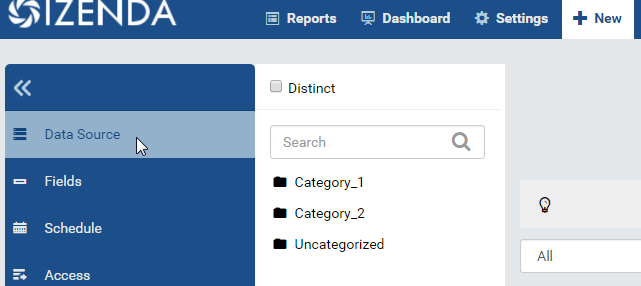
Fig. 171 Report Designer - Data Source
In browser, log in to Izenda as a user with Report permission.
Click New, then Data Source in the left menu. (Fig. 171)
- 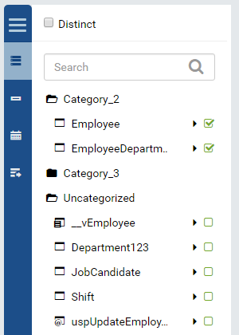
Fig. 172 Report Designer - Data Source List
Visible tables, views, or stored procedures from all connections will be displayed in the Middle Panel.
The categories are expanded by default so the user can see the data sources inside. The user can collapse each category to provide additional screen real estate to uncollapsed categories. (Fig. 172)
{kind=link}
{kind=link}
{kind=link}
Search for data sources¶
{kind=link}
Fig. 174 Report Designer - Data Source Search
The list of data sources can grow very big over time. In this case, the Search box will help user to quickly find specific items.
- Type a partial name and click the search icon (🔍).
- Only data sources with matching names or matching field names will be
displayed. (Fig. 174)
Select and unselect data sources¶
- 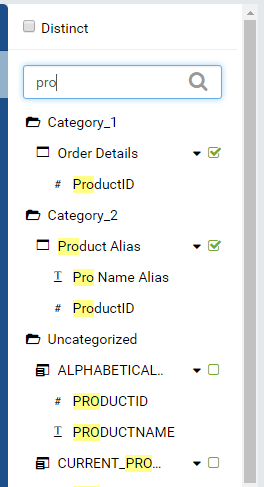
Fig. 175 Report Designer - Select Data Source
Tick the checkbox on the right of data sources to select them.
Existing relationships between selected data sources will be automatically added to the relationship list in Content Panel.
Untick the checkbox on the right of data sources to unselect them.
Relationships with unselected data sources will be automatically removed from the relationship list in Content Panel. (Fig. 175)
{kind=link}
Note
Izenda supports using stored procedures as data sources. Just make sure that the account in connection string has necessary permissions for this case, see Connection Permissions.
Set the report as Distinct¶
The Distinct checkbox on top of Middle Panel if ticked will force the report to return unique values only.
Leave it unticked to allow duplicated values in the result.
Set the number of preview records¶
The amount of data in preview panel under the relationship list can be configured by selecting from Preview Records drop-down at the top.
Save the report¶
- 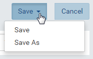
Fig. 176 Report Designer - Save As
Click Save button at the top to open the Save pop-up.
If the report has been saved already then there is another option to Save As a new one. (Fig. 176)
Enter the name for the report in Report Name box.
Select to save as Templates.
The option to save as Reports is only available after any field is defined in Report Designer/Design page.
Select a category for the report in Category drop down.
- 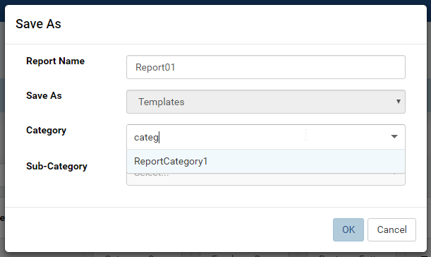
Fig. 177 Report Designer - Search Category
Type a partial name to quickly search for the category. (Fig. 177)
- 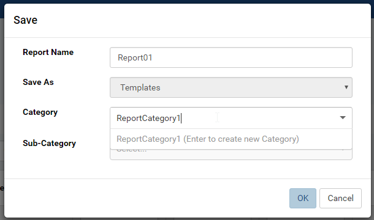
Fig. 178 Report Designer - New Category
A new category can be created in-place by typing the name in and pressing Enter. (Fig. 178)
- 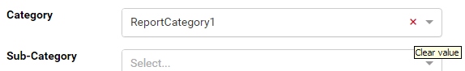
Fig. 179 Report Designer - Clear Category
Click the x icon to clear the existing one. (Fig. 179)
Similarly select a sub-category for the report in Sub-Category drop down.
Click OK to save the report.
{kind=link}
{kind=link}
{kind=link}
{kind=link}
{kind=link}
{kind=link}
Add and remove relationships¶
To run a report from more than one table, relationships among the tables must be available or defined to join the tables together.
- With most properly designed databases, relationships are already available, so after selecting data sources the relationship list will have been fully populated.
- However, relationships need to be defined for some cases such as ad hoc queries or cross database joins.
For example, from Northwind database, user needs an ad hoc report to
find out if any supplier happens to be in one of the territories. The
join that user needs to build is
[Suppliers].[City] = [Territories].[TerritoryDescription].
Select Suppliers and Territories in the Middle Panel.
The relationship list remains empty and the report cannot be saved.
Click Add Relationship button, a blank new row is inserted into the list.
Select Inner in Join Type drop-down.
Select values in Category, Data Object, Join Field, then Category, Foreign Data Object and Field in left-to-right sequence for data to populate correctly.
Select data so that the row reads:
| Category | Suppliers | City | = | Category | Territories | TerritoryDescription |Click Validate Syntax button and see success message. (Fig. 182)
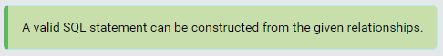Fig. 182 Report Designer - Validate Syntax Success
{kind=link}
To quickly add relationship, user can copy an existing one then modify it by clicking the Copy icon (that looks a bit like this ❐).
No longer needed relationships can also be removed by clicking the Remove icon (X).
See also
Add Key Join Relationship¶
A single column is needed for the example join above. There are rare
cases when multiple columns are needed in a join. For example, from
Northwind database, user needs an ad hoc report to list out the products
that are used in a single order. One way to do that is to compare the
Quantity in the order with the UnitsOnOrder of the product. The join
that user needs to build is
[Order Details].[ProductID] = [Products].[ProductID] AND [Order Details].[Quantity] = [Products].[UnitsOnOrder].
Select Order Details and Products in the Middle Panel.
The relationship list is populated with the existing relationship
[Order Details].[ProductID] = [Products].[ProductID].Click the Add Key Join icon in Action, a blank new row is inserted under that existing relationship.
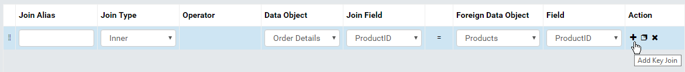Fig. 183 Report Designer - Add Key Join
Select values in Operator, Category, Data Object, Join Field, then Category, Foreign Data Object and Field in left-to-right sequence for data to populate correctly.
Select data so that the row reads:
| And | Order Details | Quantity | = | Products | UnitsOnOrder |Click Validate Syntax button and see success message.
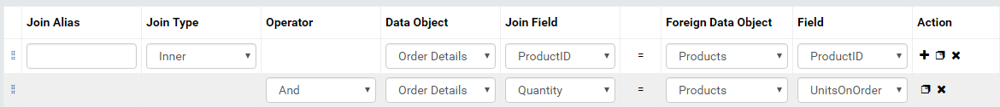Fig. 184 [Order Details].[Quantity] = [Products].[UnitsOnOrder]
{kind=link}
{kind=link}
Add Join Alias¶
The joined tables can be given alias to be referred to in subsequent join clauses.
For example, to get data of Products and related Categories and Suppliers, the [Products] table needs to be joined with:
- [Categories] table
[Products].[CategoryID] = [Categories].[CategoryID] - [Suppliers] table
[Products].[SupplierID] = [Suppliers].[SupplierID]
The [Products] table is used twice and therefore should be given an alias as below: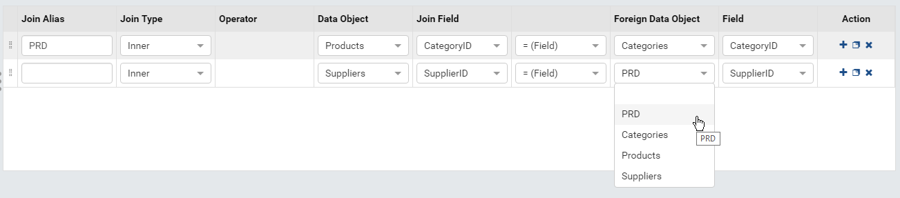Fig. 185 The alias PRD must be selected instead of the original table name Products
That is equivalent to the following SQL statement:
SELECT * FROM [Products] AS PRD INNER JOIN [Categories] ON PRD.[CategoryID] = [Categories].[CategoryID] INNER JOIN [Suppliers] ON PRD.[SupplierID] = [Suppliers].[SupplierID]
- [Categories] table
Effects of alias in a key join: if the original table is given an alias, that alias must be selected in the key join.
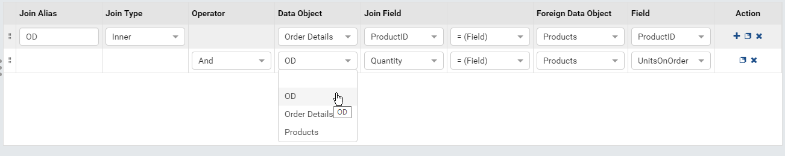Fig. 186 The alias OD must be selected instead of the original table name Order Details
That is equivalent to the following SQL statement:
SELECT * FROM [Order Details] AS OD INNER JOIN [Products] ON OD.[ProductID] = [Products].[ProductID] AND OD.[Quantity] = [Products].[UnitsOnOrder]
An alias is also required in case of a self-join. For example, [Employees].[ReportsTo] is foreign key to [EmployeesID] in the same table, hence, an alias must be given to differentiate the two different [Employees] tables.
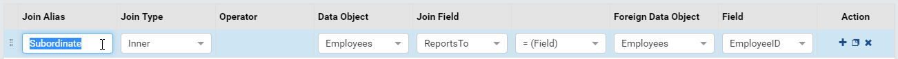Fig. 187 The alias Subordinate must be given
That is equivalent to the following SQL statement:
SELECT * FROM [Employees] AS Subordinate INNER JOIN [Employees] ON Subordinate.[ReportsTo] = [Employees].[EmployeeID]
{kind=link}
{kind=link}
{kind=link}